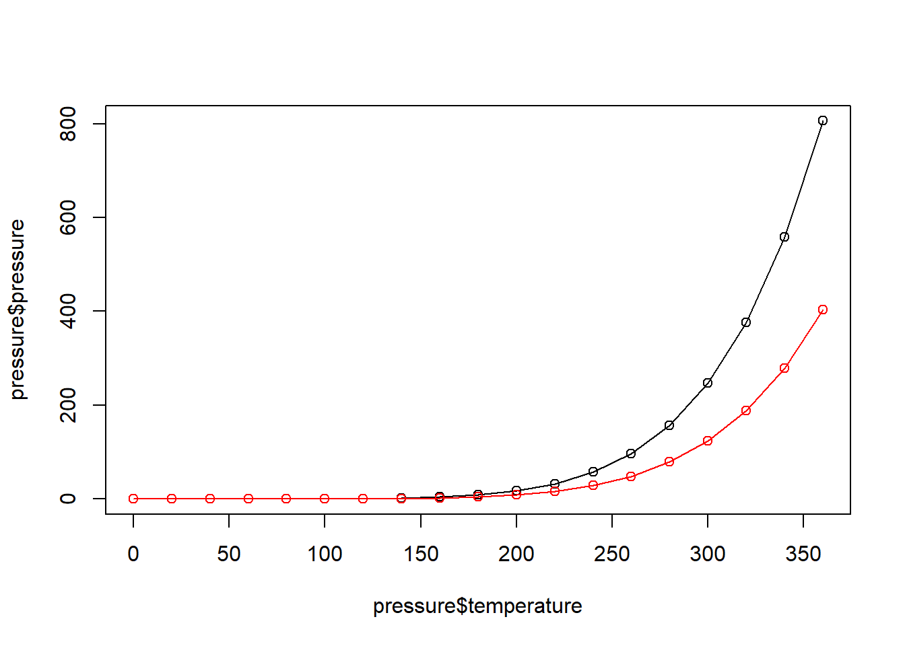
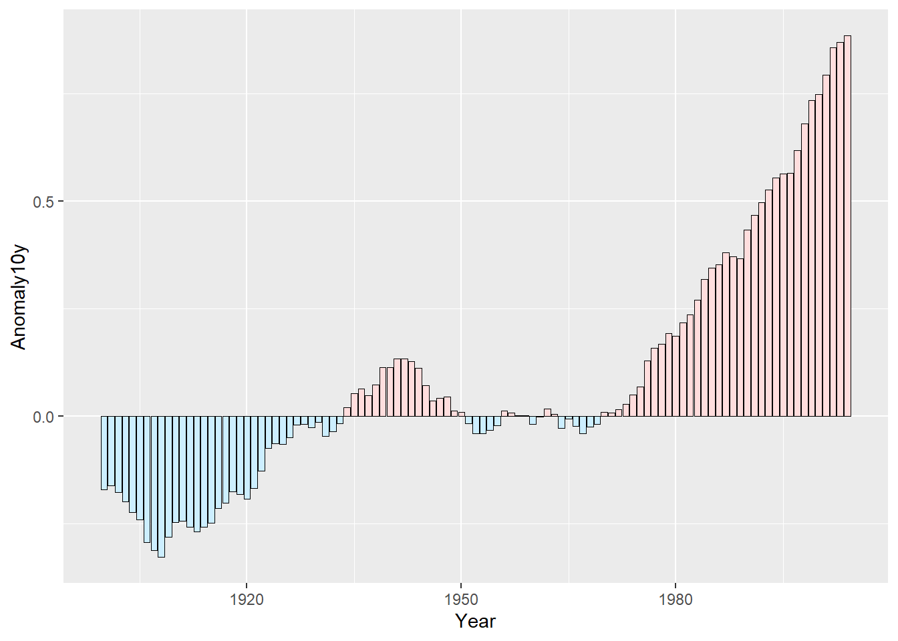

Basics
Packages
Most of the recipes in this book require the ggplot2,
dplyr, and gcookbook packages to be installed
on your computer. (The gcookbook package contains data sets
used in some of the examples, but is not necessary for doing your real
work).
# remember `tidyverse` is dplyr, tidyr, ggplot2 and a number of other packages
install.packages("tidyverse")
install.packages("gcookbook")Then, in each R session, before running the examples in this book, you can load them with:
## Warning: package 'tidyverse' was built under R version 4.3.0## Warning: package 'ggplot2' was built under R version 4.3.0## Warning: package 'tibble' was built under R version 4.3.0## Warning: package 'tidyr' was built under R version 4.3.0## Warning: package 'readr' was built under R version 4.3.0## Warning: package 'purrr' was built under R version 4.3.0## Warning: package 'stringr' was built under R version 4.3.0## Warning: package 'forcats' was built under R version 4.3.0## Warning: package 'lubridate' was built under R version 4.3.0## ── Attaching core tidyverse packages ────────────────────────────────────────────────────── tidyverse 2.0.0 ──
## ✔ forcats 1.0.0 ✔ readr 2.1.4
## ✔ ggplot2 3.4.2 ✔ stringr 1.5.0
## ✔ lubridate 1.9.2 ✔ tibble 3.2.1
## ✔ purrr 1.0.1 ✔ tidyr 1.3.0
## ── Conflicts ──────────────────────────────────────────────────────────────────────── tidyverse_conflicts() ──
## ✖ dplyr::filter() masks stats::filter()
## ✖ dplyr::lag() masks stats::lag()
## ℹ Use the conflicted package (<http://conflicted.r-lib.org/>) to force all conflicts to become errorsIf you want to keep your R session more streamlined and load only the packages that are strictly needed, you can load ggplot2 and dplyr packages individually:
ggplot2
The ggplot2 package was originally created by Hadley
Wickham. It is not a part of base R, but it has attracted
many users in the R community because of its versatility, clear and
consistent interface, and beautiful output.
ggplot2 takes a different approach to graphics than
other plotting packages in R. It gets its name from Leland Wilkinson’s
grammar of graphics, which provides a formal, structured perspective on
how to describe data graphics.
Even though, it doesn’t mean to say that it’s the be-all and end-all of graphics in R. For example, it is sometimes faster and easier to inspect and explore data with R’s base graphics, especially when the data isn’t already structured properly for use with ggplot2. There are some things that ggplot2 can’t do, or can’t do as well as other plotting packages. There are other things that ggplot2 can do, but that specialized packages are better suited to handling. For most purposes, though, I believe that ggplot2 gives the best return on time invested, and it provides beautiful, publication-ready results.
Another excellent package for general-purpose plots is
lattice, by Deepyan Sarkar, which is an implementation of
trellis graphics. It is included as part of the base installation of
R.
Background
In a data graphic, there is a mapping (or correspondence) from properties of the data to visual properties in the graphic. The data properties are typically numerical or categorical values, while the visual properties include the x and y positions of points, colors of lines, heights of bars, and so on. A data visualization that didn’t map the data to visual properties wouldn’t be a data visualization. On the surface, representing a number with an x coordinate may seem very different from representing a number with a color of a point, but at an abstract level, they are the same. Everyone who has made data graphics has at least an implicit understanding of this. For most of us, that’s where our understanding remains.
In the grammar of graphics, this deep similarity is not just recognized, but made central. In R’s base graphics functions, each mapping of data properties to visual properties is its own special case, and changing the mappings may require restructuring your data, issuing completely different plotting commands, or both.
To illustrate, I’ll show a graph made from the simpledat
data set from the gcookbook package:
## A1 A2 A3
## B1 10 7 12
## B2 9 11 6The following will make a simple grouped bar plot, with the As going along the x-axis and the bars grouped by the Bs:
One thing we might want to do is switch things up so the Bs go along the x-axis and the As are used for grouping. To do this, we need to restructure the data by transposing the matrix:
## B1 B2
## A1 10 9
## A2 7 11
## A3 12 6With the restructured data, we can create the plot the same way as before
Another thing we might want to do is to represent the data with lines
instead of bars. To do this with base graphics, we need to use a
completely different set of commands. First we call plot(),
which tells R to create a new plot and draw a line for one row of data.
Then we tell it to draw a second row with lines():
The resulting plot has a few quirks. The second (blue) line runs below
the visible range, because the y range was set only for the first line,
when the plot() function was called. Additionally, the
x-axis is numbered instead of categorical.
Now let’s take a look at the corresponding code and plots with
ggplot2. With ggplot2, the structure of the
data is always the same: it requires a data frame in “long” format, as
opposed to the “wide” format used previously. When the data is in long
format, each row represents one item. Instead of having their groups
determined by their positions in the matrix, the items have their groups
specified in a separate column. Here is simpledat,
converted to long format:
simpledat.long<- data.frame(simpledat) %>%
tibble::rownames_to_column(var = "Bval") %>%
pivot_longer (
cols= -Bval,
names_to = "Aval",
values_to = "values")This represents the same information, but with a different structure. Another term for it is tidy data, where each row represents one observation. There are advantages and disadvantages to this format, but on the whole, it makes things simpler when dealing with complicated data sets.
To make the first grouped bar plot, we tell ggplot2 to map
Aval to the x position, with
x = Aval, and Bval to the fill color, with
fill = Bval. This will make the As run along
the x-axis and the Bs determine the grouping. We also tell
it to map value to the y position, or height, of the bars, with
y = value. Finally, we tell it to draw bars with
geom_col() (don’t worry about the other details yet; we’ll
get to those later):
To switch things so that the Bs go along the x-axis and
the As determine the grouping, we simply swap the mapping
specification, with x = Bval and fill = Aval.
Unlike with base graphics, we don’t have to change the data; we just
change the commands for making the plot:
> You may have noticed that with ggplot2, components of
the plot are combined with the + operator. You can
gradually build up a ggplot object by adding components to it. Then,
when you’re all done, you can tell it to print.
To change it to a line plot, we’ll change geom_col() to
geom_line(). We’ll also map Bval to the
line color, with colour, instead of the
fill colour (note the British spelling – the author of
ggplot2 is a Kiwi). Again, don’t worry about the other
details yet:
With base graphics, we had to use completely different
commands to make a line plot instead of a bar plot. With
ggplot2, we just changed the geom from bars to
lines. The resulting plot also has important differences from the base
graphics version: the y range is automatically adjusted to fit
all the data because all the lines are drawn together instead of one at
a time, and the x-axis remains categorical instead of being
converted to a numeric axis. The ggplot2 plots also have
automatically-generated legends.
In summary, a plot in ggplot2 consists of different
primary layering components, with the three primary
components being:
- The dataset that houses the data to be plotted;
- The aesthetics which describe how data are to be mapped to the geometric elements (color, shape, size, etc..);
- The geometric elements to use in the plot (i.e. points, lines, rectangles, etc…).
Additional (optional) layering components include:
- Statistical elements such as smoothing, binning or transforming the variable
- Facets for conditional or trellis plots
- Coordinate systems for defining the plots shape (i.e. Cartesian, polar, spatial map projections, etc…)
Using a long table:

Iris species data collection
Then:

Iris species data collection
If we want to plot lines instead of points, simply substitute the
geometry type with the geom_line geometry.
Some Terminology and Theory
Before we go any further, it’ll be helpful to define some of the
terminology used in ggplot2:
The data is what we want to visualize. It consists of variables, which are stored as columns in a data frame.
Geoms are the geometric objects that are drawn to represent the data, such as bars, lines, and points.
Aesthetic attributes, or aesthetics, are visual properties of geoms, such as x and y position, line color, point shapes, etc.
There are mappings from data values to aesthetics.
Scales control the mapping from the values in the data space to values in the aesthetic space. A continuous y scale maps larger numerical values to vertically higher positions in space.
Guides show the viewer how to map the visual properties back to the data space. The most commonly used guides are the tick marks and labels on an axis.
Here’s an example of how a typical mapping works. You have data, which is a set of numerical or categorical values. You have geoms to represent each observation. You have an aesthetic, such as y (vertical) position. And you have a scale, which defines the mapping from the data space (numeric values) to the aesthetic space (vertical position). A typical linear y-scale might map the value 0 to the baseline of the graph, 5 to the middle, and 10 to the top. A logarithmic y scale would place them differently.
These aren’t the only kinds of data and aesthetic spaces possible. In the abstract grammar of graphics, the data and aesthetics could be anything; in the ggplot2 implementation, there are some predetermined types of data and aesthetics. Commonly used data types include numeric values, categorical values, and text strings. Some commonly used aesthetics include horizontal and vertical position, color, size, and shape.
To interpret the plot, viewers refer to the guides. An example of a guide is the y-axis, including the tick marks and labels. The viewer refers to this guide to interpret what it means when a point is in the middle of the scale. A legend is another type of scale. A legend might show people what it means for a point to be a circle or a triangle, or what it means for a line to be blue or red.
Some aesthetics can only work with categorical variables, such as the shape of a point: triangles, circles, squares, etc. Some aesthetics work with categorical or continuous variables, such as x (horizontal) position. For a bar graph, the variable must be categorical-it would make no sense for there to be a continuous variable on the x-axis. For a scatter plot, the variable must be numeric. Both of these types of data (categorical and numeric) can be mapped to the aesthetic space of x position, but they require different types of scales.
In ggplot2 terminology, categorical variables are called discrete, and numeric variables are called continuous. These terms may not always correspond to how they’re used elsewhere. Sometimes a variable that is continuous in the ggplot2 sense is discrete in the ordinary sense. For example, the number of visible sunspots must be an integer, so it’s numeric (continuous to
ggplot2) and discrete (in ordinary language).
Building a simple plot
ggplot2 has a simple requirement for data structures:
they must be stored in data frames, and each type of variable that is
mapped to an aesthetic must be stored in its own column. In the
simpledat examples we looked at earlier, we first mapped
one variable to the x aesthetic and another to the fill aesthetic; then
we changed the mapping specification to change which variable was mapped
to which aesthetic.
We’ll walk through a simple example here. First, we’ll make a data frame of some sample data:
## xval yval group
## 1 1 3 A
## 2 2 5 B
## 3 3 6 A
## 4 4 9 BA basic ggplot() specification looks like this.
 This creates a ggplot object using the dataframe
This creates a ggplot object using the dataframe dat. It
also specifies default aesthetic mappings within
aes():
x = xvalmaps the column xval to the x position.y = yvalmaps the column yval to the y position.
After we’ve given ggplot the data frame and the aesthetic mappings,
there’s one more critical component: we need to tell it what geometric
objects to add. At this point, ggplot2 doesn’t know if we
want bars, lines, points, or something else to be drawn on the graph.
We’ll add geom_point() to draw points, resulting in a
scatter plot:
If you’re going to reuse some of these components, you can store them
in variables. We can save the ggplot object in p, and then
add geom_point() to it. This has the same effect as the
preceding code:

We can also map the variable group to the color of the points, by
putting aes() inside the call to geom_point(),
and specifying colour = group:
This doesn’t alter the default aesthetic mappings that we
defined previously, inside of ggplot(...). What it does is
add an aesthetic mapping for this particular geom,
geom_point(). If we added other geoms, this mapping would
not apply to them.
Contrast this aesthetic mapping with aesthetic
setting. This time, we won’t use aes(); we’ll just
set the value of colour directly:
We can also modify the scales; that is, the mappings from data to visual attributes. Here, we’ll change the x scale so that it has a larger range
If we go back to the example with the colour = group
mapping, we can also modify the color scale:
Both times when we modified the scale, the guide also changed. With the x scale, the guide was the markings along the x-axis. With the color scale, the guide was the legend.
Notice that we’ve used + to join together the pieces. In
this last example, we ended a line with +, then added more
on the next line. If you are going to have multiple lines, you have to
put the + at the end of each line, instead of at the
beginning of the next line. Otherwise, R’s parser won’t know that
there’s more stuff coming; it’ll think you’ve finished the expression
and evaluate it.
Printing
In R’s base graphics, the graphing functions tell R to draw plots to
the output device (the screen or a file). ggplot2 is a
little different. The commands don’t directly draw to the output device.
Instead, the functions build plot objects, and the plots aren’t
drawn until you use the print() function, as in
print(object). You might be thinking, “But wait, I haven’t
told R to print anything, yet it’s made these plots!” Well, that’s not
exactly true. In R, when you issue a command at the prompt, it really
does two things: first it runs the command, then it calls
print() with the result returned from that command.
The behavior at the interactive R prompt is different from when you run a script or function. In scripts, commands aren’t automatically printed. The same is true for functions, but with a slight catch: the result of the last command in a function is returned, so if you call the function from the R prompt, the result of that last command will be printed because it’s the result of the function.
Stats
Sometimes your data must be transformed or summarized before it is
mapped to an aesthetic. This is true, for example, with a histogram,
where the samples are grouped into bins and counted. The counts for each
bin are then used to specify the height of a bar. Some geoms, like
geom_histogram(), automatically do this for you, but
sometimes you’ll want to do this yourself, using various
stat_xx functions.
Themes
Some aspects of a plot’s appearance fall outside the scope of the
grammar of graphics. These include the color of the background and grid
lines in the plotting area, the fonts used in the axis labels, and the
text in the plot title. These are controlled with the
theme() function.
Quick data exploration
Scatter plot
To make a scatter plot, use plot() and pass it a vector of x values followed by a vector of y values.

The mtcars$wt returns the column named wt
from the mtcars dataframe, and mtcars$mpg is
the mpg column.
With ggplot2, you can get a similar result using the
ggplot() function:
 The usual way to use
The usual way to use ggplot() is to pass it a data frame
(mtcars) and then tell it which columns to use for the
x and y values. If you want to pass it two vectors for
x and y values, you can use data = NULL,
and then pass it the vectors. Keep in mind that ggplot2 is
designed to work with data frames as the data source, not individual
vectors, and that using it this way will only allow you to use a limited
part of its capabilities.
Line plot
To make a line graph using plot(), pass it a vector of
x values and a vector of y values, and use
type = "l"
To add points and/or multiple lines, first call plot()
for the first line, then add points with points() and
additional lines with lines():
plot(pressure$temperature, pressure$pressure, type = "l")
points(pressure$temperature, pressure$pressure)
lines(pressure$temperature, pressure$pressure/2, col = "red")
points(pressure$temperature, pressure$pressure/2, col = "red")
With ggplot2, you can get a similar result using
geom_line()
As with scatter plots, you can pass you data in vectors instead of in a data frame (but this will limit the things you can do later with the plot):
 > It’s common with
> It’s common with ggplot() to split the command on
multiple lines, ending each line with a + so that R knows
that the command will continue on the next line.
Bar plot
To make a bar graph of values, use barplot() and pass it a vector of values for the height of each bar and (optionally) a vector of labels for each bar. If the vector has names for the elements, the names will automatically be used as labels:
 Sometimes “bar plot” refers to a graph where the bars represent the
count of cases in each category. This is similar to a histogram, but
with a discrete instead of continuous x-axis. To generate the count of
each unique value in a vector, use the
Sometimes “bar plot” refers to a graph where the bars represent the
count of cases in each category. This is similar to a histogram, but
with a discrete instead of continuous x-axis. To generate the count of
each unique value in a vector, use the table() function
then pass the resulting table to barplot() to generate the
graph of counts:
With ggplot2, you can get a similar result using
geom_col(). To plot a bar graph of values, use
geom_col(). Notice the difference in the output when the x
variable is continuous and when it is discrete:
# Bar graph of values. This uses the BOD data frame, with the
# "Time" column for x values and the "demand" column for y values.
ggplot(BOD, aes(x = Time, y = demand)) +
geom_col()
# Convert the x variable to a factor, so that it is treated as discrete
ggplot(BOD, aes(x = factor(Time), y = demand)) +
geom_col()ggplot2 can also be used to plot the count of the number
of data rows in each category by using geom_bar() instead
of geom_col(). Once again, notice the difference between a
continuous x-axis and a discrete one. For some kinds of data, it may
make more sense to convert the continuous x variable to a discrete one,
with the factor() function.
# Bar graph of counts using the mtcars data frame, with the "cyl" column for
# x position. The y position is calculated by counting the number of rows for
# each value of cyl.
ggplot(mtcars, aes(x = cyl)) +
geom_bar()
Histogram
To make a histogram, use hist() and pass it a vector of
values:

 With the
With the ggplot2, you can get a similar result using
geom_histogram():
## `stat_bin()` using `bins = 30`. Pick better value with `binwidth`.
When you create a histogram without specifying the bin width,
ggplot() prints out a message telling you that it’s
defaulting to 30 bins, and to pick a better bin width. This is because
it’s important to explore your data using different bin widths; the
default of 30 may or may not show you something useful about your
data.
Box plot
To make a box plot, use plot() and pass it a factor of x
values and a vector of y values. When x is a factor (as opposed to a
numeric vector), it will automatically create a box plot:
# The Effect of Vitamin C on Tooth Growth in Guinea Pigs
# ?ToothGrowth
plot(ToothGrowth$supp, ToothGrowth$len)If the two vectors are in the same data frame, you can also use the
boxplot() function with formula syntax. With this syntax,
you can combine two variables on the x-axis.
With the ggplot2 package, you can get a similar result
with geom_boxplot()
It’s also possible to make box plots for multiple variables, by
combining the variables with interaction():
You may have noticed that the box plots from
basegraphics are ever-so-slightly different from those fromggplot2. This is because they use slightly different methods for calculating quantiles. See?geom_boxplotand?boxplot.statsfor more information on how they differ.
Curve function
To plot a function curve use curve() and pass it an
expression with the variable x:
You can plot any function that takes a numeric vector as input and
returns a numeric vector, including functions that you define yourself
(more on this later). Using add = TRUE will add a curve to
the previously created plot:
# Plot a user-defined function
myfun <- function(xvar) {
1 / (1 + exp(-xvar + 10))
}
curve(myfun(x), from = 0, to = 20)
# Add a line:
curve(1 - myfun(x), add = TRUE, col = "red")
With ggplot2, you can get a similar result, by using
stat_function(geom = "line") and passing it a function that
takes a numeric vector as input and returns a numeric vector:
Bar plots
Basics
There’s an important distinction you should be aware of when making bar graphs: sometimes the bar heights represent counts of cases in the data set, and sometimes they represent values in the data set. Keep this distinction in mind – it can be a source of confusion since they have very different relationships to the data, but the same term is used for both of them.
By default, bar graphs use a dark grey for the bars. To use a color
fill, use fill. Also, by default, there is no outline
around the fill. To add an outline, use colour.
Grouping
If you want to group bars together by a second variable, and map a
variable to fill, and use geom_col(position = "dodge").
In this example we’ll use the cabbage_exp dataset, which
has two categorical variables, Cultivar and
Date, and one continuous variable, Weight.
We’ll map Date to the x position and map
Cultivar to the fill color.
To add a black outline, use colour = "black" inside
geom_col(). To set the colors, you can use
scale_fill_brewer() or
scale_fill_manual().
ggplot(cabbage_exp, aes(x = Date, y = Weight, fill = Cultivar)) +
geom_col(position = "dodge", colour = "black") +
scale_fill_brewer(palette = "Pastel1") +
xlab("Date")
Positive/negative
We’ll use a subset of the climate data and create a new column called pos, which indicates whether the value is positive or negative:
climate_sub <- climate %>%
filter(Source == "Berkeley" & Year >= 1900) %>%
mutate(pos = Anomaly10y >= 0)
ggplot(climate_sub, aes(x = Year, y = Anomaly10y, fill = pos)) +
geom_col(position = "identity", colour = "black", linewidth = 0.25) +
scale_fill_manual(values = c("#CCEEFF", "#FFDDDD"), guide = FALSE)## Warning: The `guide` argument in `scale_*()` cannot be `FALSE`. This was deprecated in ggplot2 3.3.4.
## ℹ Please use "none" instead.
## This warning is displayed once every 8 hours.
## Call `lifecycle::last_lifecycle_warnings()` to see where this warning was generated.
Once we have the data, we can make the graph and map pos to the fill color, as in Figure @ref(fig:FIG-BAR-GRAPH-COLOR-NEG). Notice that we use position=“identity” with the bars. This will prevent a warning message about stacking not being well defined for negative numbers:
{r FIG-BAR-GRAPH-COLOR-NEG, fig.cap="Different colors for positive and negative values", fig.width=10, fig.height=2.5, out.width="100%"} ggplot(climate_sub, aes(x = Year, y = Anomaly10y, fill = pos)) + geom_col(position = "identity")
Discussion
There are a few problems with the first attempt. First, the colors are probably the reverse of what we want: usually, blue means cold and red means hot. Second, the legend is redundant and distracting.
We can change the colors with scale_fill_manual() and
remove the legend with guide = FALSE, as shown in Figure
@ref(fig:FIG-BAR-GRAPH-COLOR-NEG2). We’ll also add a thin black outline
around each of the bars by setting colour and specifying
size, which is the thickness of the outline (in
millimeters):
{r FIG-BAR-GRAPH-COLOR-NEG2, fig.cap="Graph with customized colors and no legend", fig.width=10, fig.height=2.5, out.width="100%"} ggplot(climate_sub, aes(x = Year, y = Anomaly10y, fill = pos)) + geom_col(position = "identity", colour = "black", size = 0.25) + scale_fill_manual(values = c("#CCEEFF", "#FFDDDD"), guide = FALSE)
See Also
To change the colors used, see Recipes Recipe @ref(RECIPE-COLORS-PALETTE-DISCRETE) and Recipe @ref(RECIPE-COLORS-PALETTE-DISCRETE-MANUAL).
To hide the legend, see Recipe @ref(RECIPE-LEGEND-REMOVE).
Adjusting Bar Width and Spacing
Problem
You want to adjust the width of bars and the spacing between them.
Solution
To make the bars narrower or wider, set width in
geom_col(). The default value is 0.9; larger values make
the bars wider, and smaller values make the bars narrower (Figure
@ref(fig:FIG-BAR-WIDTH)).
For example, for standard-width bars:
``{r eval=FALSE} library(gcookbook) # Load gcookbook for the pg_mean data set
ggplot(pg_mean, aes(x = group, y = weight)) + geom_col() ``
For narrower bars:
{r eval=FALSE} ggplot(pg_mean, aes(x = group, y = weight)) + geom_col(width = 0.5)
And for wider bars (these have the maximum width of 1):
{r eval=FALSE} ggplot(pg_mean, aes(x = group, y = weight)) + geom_col(width = 1)
``{r FIG-BAR-WIDTH, echo=FALSE, fig.show=“hold”, fig.cap=“Different bar widths”, fig.width=4, fig.height=3} ggplot(pg_mean, aes(x = group, y = weight)) + geom_col()
ggplot(pg_mean, aes(x = group, y = weight)) + geom_col(width = 0.5)
ggplot(pg_mean, aes(x = group, y = weight)) + geom_col(width = 1) ``
For grouped bars, the default is to have no space between bars within
each group. To add space between bars within a group, make width smaller
and set the value for position_dodge to be larger than
width (Figure @ref(fig:FIG-BAR-WIDTH-DODGE)).
For a grouped bar graph with narrow bars:
{r eval=FALSE} ggplot(cabbage_exp, aes(x = Date, y = Weight, fill = Cultivar)) + geom_col(width = 0.5, position = "dodge")
And with some space between the bars:
{r eval=FALSE} ggplot(cabbage_exp, aes(x = Date, y = Weight, fill = Cultivar)) + geom_col(width = 0.5, position = position_dodge(0.7))
``{r FIG-BAR-WIDTH-DODGE, echo=FALSE, fig.show=“hold”, fig.cap=“Bar graph with narrow grouped bars (left); With space between the bars (right)”, fig.width=4.5, fig.height=3} ggplot(cabbage_exp, aes(x = Date, y = Weight, fill = Cultivar)) + geom_col(width = 0.5, position = “dodge”)
ggplot(cabbage_exp, aes(x = Date, y = Weight, fill = Cultivar)) + geom_col(width = 0.5, position = position_dodge(0.7)) ``
The first graph used position = "dodge", and the second
graph used position = position_dodge(). This is because
position = "dodge" is simply shorthand for
position = position_dodge() with the default value of 0.9,
but when we want to set a specific value, we need to use the more
verbose form.
Discussion
The default width for bars is 0.9, and the default value
used for position_dodge() is the same. To be more precise,
the value of width in position_dodge() is
NULL, which tells ggplot2 to use the same value as the
width from geom_bar().
All of these will have the same result:
{r eval=FALSE} geom_bar(position = "dodge") geom_bar(width = 0.9, position = position_dodge()) geom_bar(position = position_dodge(0.9)) geom_bar(width = 0.9, position = position_dodge(width=0.9))
The items on the x-axis have x values of 1, 2, 3, and so on, though
you typically don’t refer to them by these numerical values. When you
use geom_bar(width = 0.9), it makes each group take up a
total width of 0.9 on the x-axis. When you use
position_dodge(width = 0.9), it spaces the bars so that the
middle of each bar is right where it would be if the bar width
were 0.9 and the bars were touching. This is illustrated in Figure
@ref(fig:FIG-BAR-WIDTH-DODGE-EXPLANATION). The two graphs both have the
same dodge width of 0.9, but while the top has a bar width of 0.9, the
bottom has a bar width of 0.2. Despite the different bar widths, the
middles of the bars stay aligned.
``{r FIG-BAR-WIDTH-DODGE-EXPLANATION, echo=FALSE, fig.show=“hold”, fig.cap=“Same dodge width of 0.9, but different bar widths of 0.9 (left) and 0.2 (right)”, fig.width=4.5, fig.height=3} ggplot(cabbage_exp, aes(x = Date, y = Weight, fill = Cultivar)) + geom_col(position = “dodge”)
ggplot(cabbage_exp, aes(x = Date, y = Weight, fill = Cultivar)) + geom_col(width = 0.2, position = position_dodge(width=0.9)) ``
If you make the entire graph wider or narrower, the bar dimensions will scale proportionally. To see how this works, you can just resize the window in which the graphs appear. For information about controlling this when writing to a file, see Chapter @ref(CHAPTER-OUTPUT).
Making a Stacked Bar Graph
Problem
You want to make a stacked bar graph.
Solution
Use geom_bar() and map a variable fill.
This will put Date on the x-axis and use
Cultivar for the fill color, as shown in Figure
@ref(fig:FIG-BAR-GRAPH-STACKED-BAR):
``{r FIG-BAR-GRAPH-STACKED-BAR, fig.cap=“Stacked bar graph”, fig.height=3.5} library(gcookbook) # Load gcookbook for the cabbage_exp data set
ggplot(cabbage_exp, aes(x = Date, y = Weight, fill = Cultivar)) + geom_col() ``
Discussion
To understand how the graph is made, it’s useful to see how the data
is structured. There are three levels of Date and two
levels of Cultivar, and for each combination there is a
value for Weight:
{r} cabbage_exp
By default, the stacking order of the bars is the same as the order
of items in the legend. For some data sets it might make sense to
reverse the order of the legend. To do this, you can use the
guides function and specify which aesthetic for which the
legend should be reversed. In this case, it’s fill:
{r FIG-BAR-GRAPH-STACKED-BAR-REVLEVELS, fig.cap="Stacked bar graph with reversed legend order", fig.height=3.5} ggplot(cabbage_exp, aes(x = Date, y = Weight, fill = Cultivar)) + geom_col() + guides(fill = guide_legend(reverse = TRUE))
If you’d like to reverse the stacking order of the bars, as in Figure
@ref(fig:FIG-BAR-GRAPH-STACKED-BAR-REVSTACK), use
position_stack(reverse = TRUE). You’ll also need to reverse
the order of the legend for it to match the order of the bars:
{r FIG-BAR-GRAPH-STACKED-BAR-REVSTACK, fig.cap="Stacked bar graph with reversed stacking order", fig.height=3.5} ggplot(cabbage_exp, aes(x = Date, y = Weight, fill = Cultivar)) + geom_col(position = position_stack(reverse = TRUE)) + guides(fill = guide_legend(reverse = TRUE))
It’s also possible to modify the column of the data frame so that the factor levels are in a different order (see Recipe @ref(RECIPE-DATAPREP-FACTOR-REORDER)). Do this with care, since the modified data could change the results of other analyses.
For a more polished graph, we’ll use scale_fill_brewer()
to get a different color palette, and use colour="black" to
get a black outline (Figure
@ref(fig:FIG-BAR-GRAPH-STACKED-BAR-COLORS)):
{r FIG-BAR-GRAPH-STACKED-BAR-COLORS, fig.cap="Stacked bar graph with reversed legend, new palette, and black outline", fig.height=3.5} ggplot(cabbage_exp, aes(x = Date, y = Weight, fill = Cultivar)) + geom_col(colour = "black") + scale_fill_brewer(palette = "Pastel1")
See Also
For more on using colors in bar graphs, see Recipe @ref(RECIPE-BAR-GRAPH-COLORS).
To reorder the levels of a factor based on the values of another variable, see Recipe @ref(RECIPE-DATAPREP-FACTOR-REORDER-VALUE). To manually change the order of factor levels, see Recipe @ref(RECIPE-DATAPREP-FACTOR-REORDER).
Making a Proportional Stacked Bar Graph
Problem
You want to make a stacked bar graph that shows proportions (also called a 100% stacked bar graph).
Solution
Use geom_col(position = "fill") (Figure
@ref(fig:FIG-BAR-GRAPH-PROP-STACKED-BAR)):
``{r FIG-BAR-GRAPH-PROP-STACKED-BAR, fig.cap=“Proportional stacked bar graph”, fig.height=3.5} library(gcookbook) # Load gcookbook for the cabbage_exp data set
ggplot(cabbage_exp, aes(x = Date, y = Weight, fill = Cultivar)) + geom_col(position = “fill”) ``
Discussion
With position = "fill", the y values will be scaled to
go from 0 to 1. To print the labels as percentages, use
scale_y_continuous(labels = scales::percent).
{r eval=FALSE} ggplot(cabbage_exp, aes(x = Date, y = Weight, fill = Cultivar)) + geom_col(position = "fill") + scale_y_continuous(labels = scales::percent)
Note
Using
scales::percentis a way of using thepercentfunction from the scales package. You could instead dolibrary(scales)and then just usescale_y_continuous(labels = percent). This would also make all of the functions from scales available in the current R session.
To make the output look a little nicer, you can change the color palette and add an outline. This is shown in (Figure @ref(fig:FIG-BAR-GRAPH-PROP-STACKED-BAR-FINAL)):
{r FIG-BAR-GRAPH-PROP-STACKED-BAR-FINAL, fig.cap="Proportional stacked bar graph with reversed legend, new palette, and black outline", fig.height=3.5} ggplot(cabbage_exp, aes(x = Date, y = Weight, fill = Cultivar)) + geom_col(colour = "black", position = "fill") + scale_y_continuous(labels = scales::percent) + scale_fill_brewer(palette = "Pastel1")
Instead of having ggplot2 compute the proportions automatically, you may want to compute the proportional values yourself. This can be useful if you want to use those values in other computations.
To do this, first scale the data to 100% within each stack. This can
be done by using group_by() together with
mutate() from the dplyr package.
``{r} library(gcookbook) library(dplyr)
cabbage_exp
Do a group-wise transform(), splitting on “Date”
ce <- cabbage_exp %>% group_by(Date) %>% mutate(percent_weight = Weight / sum(Weight) * 100)
ce ``
To calculate the percentages within each Weight group,
we used dplyr’s group_by() and mutate()
functions. In the example here, the group_by() function
tells dplyr that future operations should operate on the data frame as
though it were split up into groups, on the Date column.
The mutate() function tells it to calculate a new column,
dividing each row’s Weight value by the sum of the
Weight column within each group.
Note
You may have noticed that
cabbage_expandceprint out differently. This is becausecabbage_expis a regular data frame, whileceis a tibble, which is a data frame with some extra properties. The dplyr package creates tibbles. For more information, see Chapter @ref(CHAPTER-DATAPREP).
After computing the new column, making the graph is the same as with a regular stacked bar graph.
{r eval=FALSE} ggplot(ce, aes(x = Date, y = percent_weight, fill = Cultivar)) + geom_col()
See Also
For more on transforming data by groups, see Recipe @ref(RECIPE-DATAPREP-CALCULATE-GROUP).
Adding Labels to a Bar Graph
Problem
You want to add labels to the bars in a bar graph.
Solution
Add geom_text() to your graph. It requires a mapping for
x, y, and the text itself. By setting vjust (the vertical
justification), it is possible to move the text above or below the tops
of the bars, as shown in Figure @ref(fig:FIG-BAR-GRAPH-LABEL):
``{r FIG-BAR-GRAPH-LABEL, fig.show=“hold”, fig.cap=“Labels under the tops of bars (left); Labels above bars (right)”, fig.height=3.5} library(gcookbook) # Load gcookbook for the cabbage_exp data set
Below the top
ggplot(cabbage_exp, aes(x = interaction(Date, Cultivar), y = Weight)) + geom_col() + geom_text(aes(label = Weight), vjust = 1.5, colour = “white”)
Above the top
ggplot(cabbage_exp, aes(x = interaction(Date, Cultivar), y = Weight)) + geom_col() + geom_text(aes(label = Weight), vjust = -0.2) ``
Notice that when the labels are placed atop the bars, they may be clipped. To remedy this, see Recipe @ref(RECIPE-AXES-RANGE).
Another common scenario is to add labels for a bar graph of
counts instead of values. To do this, use
geom_bar(), which adds bars whose height is proportional to
the number of rows, and then use geom_text() with
counts:
{r FIG-BAR-GRAPH-COUNT-LABEL, fig.cap="Bar graph of counts with labels under the tops of bars", fig.width=4, fig.height=3.5} ggplot(mtcars, aes(x = factor(cyl))) + geom_bar() + geom_text(aes(label = ..count..), stat = "count", vjust = 1.5, colour = "white")
We needed to tell geom_text() to use the
"count" statistic to compute the number of rows for each x
value, and then, to use those computed counts as the labels, we told it
to use the aesthetic mapping aes(label = ..count..).
Discussion
In Figure @ref(fig:FIG-BAR-GRAPH-LABEL), the y coordinates
of the labels are centered at the top of each bar; by setting the
vertical justification (vjust), they appear below or above
the bar tops. One drawback of this is that when the label is above the
top of the bar, it can go off the top of the plotting area. To fix this,
you can manually set the y limits, or you can set the
y positions of the text above the bars and not change
the vertical justification. One drawback to changing the text’s
y position is that if you want to place the text fully above or
below the bar top, the value to add will depend on the y range
of the data; in contrast, changing vjust to a different
value will always move the text the same distance relative to the height
of the bar:
``{r, eval=FALSE} # Adjust y limits to be a little higher ggplot(cabbage_exp, aes(x = interaction(Date, Cultivar), y = Weight)) + geom_col() + geom_text(aes(label = Weight), vjust = -0.2) + ylim(0, max(cabbage_exp$Weight) * 1.05)
Map y positions slightly above bar top - y range of plot will auto-adjust
ggplot(cabbage_exp, aes(x = interaction(Date, Cultivar), y = Weight)) + geom_col() + geom_text(aes(y = Weight + 0.1, label = Weight)) ``
For grouped bar graphs, you also need to specify position=position_dodge() and give it a value for the dodging width. The default dodge width is 0.9. Because the bars are narrower, you might need to use size to specify a smaller font to make the labels fit. The default value of size is 5, so we’ll make it smaller by using 3 (Figure @ref(fig:FIG-BAR-LABEL-GROUPED)):
{r FIG-BAR-LABEL-GROUPED, fig.cap="Labels on grouped bars", fig.height=3.5} ggplot(cabbage_exp, aes(x = Date, y = Weight, fill = Cultivar)) + geom_col(position = "dodge") + geom_text( aes(label = Weight), colour = "white", size = 3, vjust = 1.5, position = position_dodge(.9) )
Putting labels on stacked bar graphs requires finding the cumulative
sum for each stack. To do this, first make sure the data is sorted
properly – if it isn’t, the cumulative sum might be calculated in the
wrong order. We’ll use the arrange() function from the
dplyr package. Note that we have to use the rev() function
to reverse the order of Cultivar:
``{r} library(dplyr)
Sort by the Date and Cultivar columns
ce <- cabbage_exp %>% arrange(Date, rev(Cultivar)) ``
Once we make sure the data is sorted properly, we’ll use
group_by() to chunk it into groups by Date,
then calculate a cumulative sum of Weight within each
chunk:
``{r FIG-BAR-LABEL-STACKED, fig.cap=“Labels on stacked bars”, fig.height=3.5} # Get the cumulative sum ce <- ce %>% group_by(Date) %>% mutate(label_y = cumsum(Weight))
ce
ggplot(ce, aes(x = Date, y = Weight, fill = Cultivar)) + geom_col() + geom_text(aes(y = label_y, label = Weight), vjust = 1.5, colour = “white”) ``
The result is shown in Figure @ref(fig:FIG-BAR-LABEL-STACKED).
When using labels, changes to the stacking order are best done by modifying the order of levels in the factor (see Recipe @ref(RECIPE-DATAPREP-FACTOR-REORDER)) before taking the cumulative sum. The other method of changing stacking order, by specifying breaks in a scale, won’t work properly, because the order of the cumulative sum won’t be the same as the stacking order.
To put the labels in the middle of each bar (Figure
@ref(fig:FIG-BAR-LABEL-STACKED-MIDDLE)), there must be an adjustment to
the cumulative sum, and the y offset in geom_bar()
can be removed:
``{r FIG-BAR-LABEL-STACKED-MIDDLE, fig.cap=“Labels in the middle of stacked bars”, fig.height=3.5} ce <- cabbage_exp %>% arrange(Date, rev(Cultivar))
Calculate y position, placing it in the middle
ce <- ce %>% group_by(Date) %>% mutate(label_y = cumsum(Weight) - 0.5 * Weight)
ggplot(ce, aes(x = Date, y = Weight, fill = Cultivar)) + geom_col() + geom_text(aes(y = label_y, label = Weight), colour = “white”) ``
For a more polished graph (Figure
@ref(fig:FIG-BAR-LABEL-STACKED-FINAL)), we’ll change the colors, add
labels in the middle with a smaller font using size, add a
“kg” suffix using paste, and make sure there are always two
digits after the decimal point by using format():
{r FIG-BAR-LABEL-STACKED-FINAL, fig.cap="Customized stacked bar graph with labels", fig.height=3.5} ggplot(ce, aes(x = Date, y = Weight, fill = Cultivar)) + geom_col(colour = "black") + geom_text(aes(y = label_y, label = paste(format(Weight, nsmall = 2), "kg")), size = 4) + scale_fill_brewer(palette = "Pastel1")
See Also
To control the appearance of the text, see Recipe @ref(RECIPE-APPEARANCE-TEXT-APPEARANCE).
For more on transforming data by groups, see Recipe @ref(RECIPE-DATAPREP-CALCULATE-GROUP).
Making a Cleveland Dot Plot
Problem
You want to make a Cleveland dot plot.
Solution
Cleveland dot plots are an alternative to bar graphs that reduce visual clutter and can be easier to read.
The simplest way to create a dot plot (as shown in Figure
@ref(fig:FIG-BAR-GRAPH-DOTPLOT)) is to use
geom_point():
``{r FIG-BAR-GRAPH-DOTPLOT, fig.cap=“Basic dot plot”, fig.width = 4, fig.height=5, out.width=“50%”} library(gcookbook) # Load gcookbook for the tophitters2001 data set tophit <- tophitters2001[1:25, ] # Take the top 25 from the tophitters data set
ggplot(tophit, aes(x = avg, y = name)) + geom_point() ``
Discussion
The tophitters2001 data set contains many columns, but
we’ll focus on just three of them for this example:
{r} tophit[, c("name", "lg", "avg")]
In Figure @ref(fig:FIG-BAR-GRAPH-DOTPLOT) the names are sorted alphabetically, which isn’t very useful in this graph. Dot plots are often sorted by the value of the continuous variable on the horizontal axis.
Although the rows of tophit happen to be sorted by
avg, that doesn’t mean that the items will be ordered that
way in the graph. By default, the items on the given axis will be
ordered however is appropriate for the data type. name is a
character vector, so it’s ordered alphabetically. If it were a factor,
it would use the order defined in the factor levels. In this case, we
want name to be sorted by a different variable,
avg.
To do this, we can use reorder(name, avg), which takes
the name column, turns it into a factor, and sorts the factor levels by
avg. To further improve the appearance, we’ll make the
vertical grid lines go away by using the theming system, and turn the
horizontal grid lines into dashed lines (Figure
@ref(fig:FIG-BAR-GRAPH-DOTPLOT-ORDERED)):
{r FIG-BAR-GRAPH-DOTPLOT-ORDERED, fig.cap="Dot plot, ordered by batting average", fig.width=4, fig.height=5, out.width="50%"} ggplot(tophit, aes(x = avg, y = reorder(name, avg))) + geom_point(size = 3) + # Use a larger dot theme_bw() + theme( panel.grid.major.x = element_blank(), panel.grid.minor.x = element_blank(), panel.grid.major.y = element_line(colour = "grey60", linetype = "dashed") )
It’s also possible to swap the axes so that the names go along the x-axis and the values go along the y-axis, as shown in Figure @ref(fig:FIG-BAR-GRAPH-DOTPLOT-ORDERED-SWAP). We’ll also rotate the text labels by 60 degrees:
{r FIG-BAR-GRAPH-DOTPLOT-ORDERED-SWAP, fig.cap="Dot plot with names on x-axis and values on y-axis", fig.width=6, fig.height=4, out.width="80%"} ggplot(tophit, aes(x = reorder(name, avg), y = avg)) + geom_point(size = 3) + # Use a larger dot theme_bw() + theme( panel.grid.major.y = element_blank(), panel.grid.minor.y = element_blank(), panel.grid.major.x = element_line(colour = "grey60", linetype = "dashed"), axis.text.x = element_text(angle = 60, hjust = 1) )
It’s also sometimes desirable to group the items by another variable.
In this case we’ll use the factor lg, which has the levels
NL and AL, representing the National League
and the American League. This time we want to sort first by
lg and then by avg. Unfortunately, the
reorder() function will only order factor levels by one
other variable; to order the factor levels by two variables, we must do
it manually:
``{r} # Get the names, sorted first by lg, then by avg nameorder <- tophit\(name[order(tophit\)lg, tophit$avg)]
Turn name into a factor, with levels in the order of nameorder
tophit\(name <- factor(tophit\)name, levels = nameorder) ``
To make the graph (Figure @ref(fig:FIG-BAR-GRAPH-DOTPLOT-ORDERED2)),
we’ll also add a mapping of lg to the color of the points.
Instead of using grid lines that run all the way across, this time we’ll
make the lines go only up to the points, by using
geom_segment(). Note that geom_segment() needs
values for x, y, xend, and
yend:
{r FIG-BAR-GRAPH-DOTPLOT-ORDERED2, fig.cap="Grouped by league, with lines that stop at the point", fig.width=4, fig.height=6, out.width="50%"} ggplot(tophit, aes(x = avg, y = name)) + geom_segment(aes(yend = name), xend = 0, colour = "grey50") + geom_point(size = 3, aes(colour = lg)) + scale_colour_brewer(palette = "Set1", limits = c("NL", "AL")) + theme_bw() + theme( panel.grid.major.y = element_blank(), # No horizontal grid lines legend.position = c(1, 0.55), # Put legend inside plot area legend.justification = c(1, 0.5) )
Another way to separate the two groups is to use facets, as shown in
Figure @ref(fig:FIG-BAR-GRAPH-DOTPLOT-ORDERED2-FACET). The order in
which the facets are displayed is different from the sorting order in
Figure @ref(fig:FIG-BAR-GRAPH-DOTPLOT-ORDERED2); to change the display
order, you must change the order of factor levels in the lg
variable:
{r FIG-BAR-GRAPH-DOTPLOT-ORDERED2-FACET, fig.cap="Faceted by league", fig.width=4, fig.height=6, out.width="50%"} ggplot(tophit, aes(x = avg, y = name)) + geom_segment(aes(yend = name), xend = 0, colour = "grey50") + geom_point(size = 3, aes(colour = lg)) + scale_colour_brewer(palette = "Set1", limits = c("NL", "AL"), guide = FALSE) + theme_bw() + theme(panel.grid.major.y = element_blank()) + facet_grid(lg ~ ., scales = "free_y", space = "free_y")
See Also
For more on changing the order of factor levels, see Recipe @ref(RECIPE-DATAPREP-FACTOR-REORDER). Also see Recipe @ref(RECIPE-DATAPREP-FACTOR-REORDER-VALUE) for details on changing the order of factor levels based on some other values.
For more on moving the legend, see Recipe @ref(RECIPE-LEGEND-POSITION). To hide grid lines, see Recipe @ref(RECIPE-APPEARANCE-HIDE-GRIDLINES).